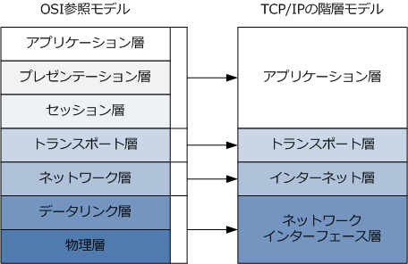
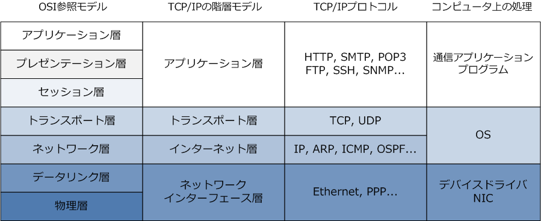
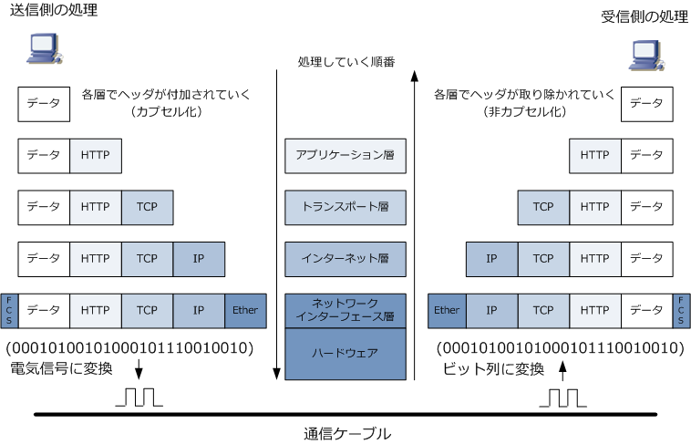

TCP/IP
TCP/IPとは
TCP/IP（Transmission Control Protocol/Internet Protocol）は、現在のインターネット通信および イントラネット通信において最も利用されている通信プロトコルです。TCP/IPは複数のプロトコルから なりますが、中心的な役割を果たすのがTCPとIPであることから TCP/IP と呼ばれるようになりました。 ※ IP通信で使用するプロトコル群（ IP, ICMP, TCP, UDP, HTTP, SMTP, SSH,TELNETなど ）を総称してTCP/IPと呼びます。
TCP/IPの階層モデル
TCP/IPにおける階層モデルは4階層から構成されています。アプリケーション層、トランスポート層、 インターネット層、ネットワークインターフェース層の4つです。ネットワークインターフェース層は ネットワークアクセス層とも呼ばれています。下図はOSI参照モデルとTCP/IP階層モデルの対応表です。

上図の通り、TCP/IPの階層モデルにおけるアプリケーション層は、OSI参照モデルのアプリケーション層、 プレゼンテーション層、セッション層に相当します。TCP/IPのトランスポート層はOSI参照モデルにおける トランスポート層に相当して、TCP/IPの階層モデルのインターネット層はOSI参照モデルのネットワーク層 に相当して、ネットワークインターフェース層は、OSI参照モデルのデータリンク層と物理層に相当します。

各階層における役割
TCP/IPの階層モデルの説明を読む前に、事前にOSI参照モデルの解説をしっかりと読んでおきましょう。
| TCP/IPプロトコルスタック | 各層の役割 |
|---|---|
| アプリケーション層 | 主にアプリケーションごとの固有の規定。この層ではHTTP, FTP, SMTP, SSHなどの アプリケーション層のプロトコルにより、通信アプリケーションの機能が実現されます。 |
| トランスポート層 | 主にノード間のデータ転送の信頼性を確保するための規定。この層では、TCPまたは UDPのプロトコルを使用します。TCPを使用する場合、信頼性の高い通信を実現して UDPを使用する場合、信頼性ではなく効率重視のデータ転送を実現することになります。 |
| インターネット層 | 主にネットワーク間のエンドツーエンドの通信のための規定。この層では、IPが代表的な プロトコルになります。IPにより、ネットワーク上のノードに対し自分の位置情報となる 論理アドレス（IPアドレス）を割り当てられるのでエンドツーエンドの通信を実現します。 |
| ネットワーク インターフェース層 |
主に直接的に接続されたノード間の通信のための規定。この層では、LANプロトコルは イーサネット、WANプロトコルはPPPが代表的なプロトコルです。イーサネットでは、 セグメント上のノードに対して、自分の位置情報となる物理アドレス（MACアドレス）を 割り当てることができるので、ローカルでのノード間の通信が実現することになります。 |
TCP/IPの階層モデルにおけるカプセル化と非カプセル化
コンピュータ間で通信する場合、送信側のコンピュータでは「アプリケーション層」 ⇒ 「トランスポート層」 ⇒ 「インターネット層」 ⇒ 「ネットワークインターフェース層」 ⇒ 「通信ケーブル」の順番でカプセル化を 行いデータが送出され、受信側のコンピュータでは「通信ケーブル」 ⇒ 「ネットワークインターフェース層」 ⇒ 「インターネット層」 ⇒ 「トランスポート層」 ⇒ 「アプリケーション層」の順番で非カプセル化を行って 送信側で付加したヘッダを取り除いていきます。つまりOSI参照モデルの場合と同様の考え方ということです。

例えば、イーサネットLANにあるコンピュータがWebサイトを参照するためには、アプリケーション層では HTTPプロトコル、トランスポート層ではTCPプロトコル、インターネット層ではIPプロトコル、ネットワー クインターフェース層ではEthernetプロトコルを使用しますが、下図では送信側では各層で処理されるたびに これらのプロトコルのヘッダが付加されて送信されて、受信側では、各階層でそのヘッダを取り除いています。